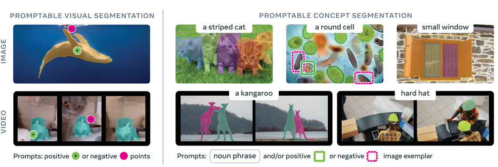
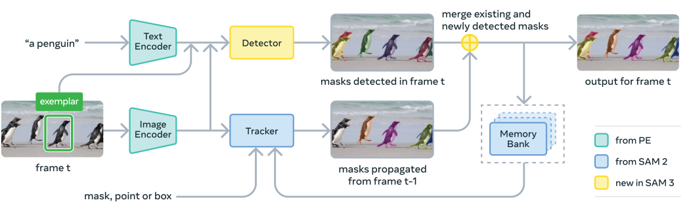
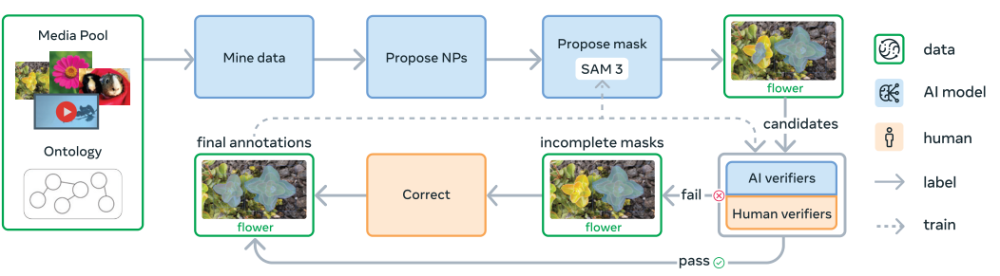
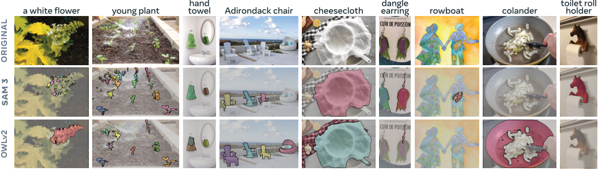

Background & Motivation
SAM 3 提出新任務 Promptable Concept Segmentation(PCS):給一個概念提示——簡短名詞片語(如「yellow school bus」)、影像範例(image exemplar),或兩者混用——模型就一次找出、分割並追蹤影像或影片中所有符合的物件實例(並在影片中保持身分)。它用一個共享 backbone 的 detector + tracker,加上把「辨識 vs 定位」解耦的 presence head,再靠產出 4M 唯一概念標註的資料引擎,在影像與影片 PCS 上把既有系統的精度翻倍。
SAM 3 introduces Promptable Concept Segmentation (PCS): given a concept prompt—a short noun phrase (e.g., "yellow school bus"), image exemplars, or both—the model detects, segments and tracks all matching object instances in an image or video (preserving identities across frames). With a shared-backbone detector + tracker, a presence head that decouples recognition from localization, and a data engine producing 4M unique concept labels, it roughly doubles the accuracy of existing systems on image and video PCS.

如果只有 30 秒In 30 seconds
- 問題 — SAM / SAM 2 的可提示分割是 一個幾何提示只吐一個物件(PVS),無法回答「把畫面裡所有的貓都框出來」這種概念層級的需求;而開放詞彙偵測器又缺乏 SAM 的高品質互動式遮罩與影片追蹤。
- Problem — SAM / SAM 2 promptable segmentation yields one object per geometric prompt (PVS); it cannot answer concept-level requests like "segment all cats in the scene." Open-vocabulary detectors, in turn, lack SAM's high-quality interactive masks and video tracking.
- 方法 — 定義 PCS 任務;架構是共享 Perception Encoder 的 DETR-based detector + SAM 2 式 tracker;關鍵是 presence head 把「概念在不在(what)」與「物件在哪(where)」解耦。
- Method — Define the PCS task; architecture is a DETR-based detector + a SAM 2-style tracker sharing a Perception Encoder; the key trick is a presence head decoupling "is the concept present (what)" from "where is each object (where)."
- 資料 — human + AI + model in-the-loop 的資料引擎,用微調過的 MLLM 當「AI 標註/驗證者」把吞吐量翻倍,產出 4M 唯一片語、52M 遮罩的高品質資料與 SA-Co benchmark(概念量 >50×)。
- Data — A human + AI + model in-the-loop data engine uses fine-tuned MLLMs as "AI annotators/verifiers" to double throughput, yielding high-quality data with 4M unique phrases, 52M masks and the SA-Co benchmark (>50× more concepts).
- 結果 — 影像/影片 PCS 比最強 baseline 至少翻倍(SA-Co/Gold cgF1 54.1 vs OWLv2⋆ 24.6);LVIS 零樣本 mask AP 48.8(前最佳 38.5);同時不犧牲、還提升 SAM 2 的 PVS/VOS 能力。
- Results — Image/video PCS at least doubles the strongest baseline (SA-Co/Gold cgF1 54.1 vs OWLv2⋆ 24.6); LVIS zero-shot mask AP 48.8 (prev. best 38.5); while retaining and even improving SAM 2's PVS/VOS.
領域脈絡:從 SAM 到 SAM 3Field context: from SAM to SAM 3
SAM(2023) 開創「可提示分割」:用點/框/遮罩互動式地切出物件。SAM 2(2024) 把它延伸到影片(memory bank + 追蹤),但兩者都是 PVS——一次一個物件、由幾何位置定義。它們無法「用一個語意概念,找出畫面裡所有符合的實例」。
SAM (2023) pioneered "promptable segmentation": cut out an object interactively with points/boxes/masks. SAM 2 (2024) extended this to video (memory bank + tracking), but both do PVS—one object at a time, defined by geometry. Neither can "use a semantic concept to find every matching instance in the scene."
另一條線是開放詞彙偵測/分割(OWLv2、GroundingDINO、LLMDet、T-Rex2、DINO-X、APE):能吃文字或影像範例,但常缺乏高品質實例遮罩、互動式修正與影片身分追蹤,且在困難、長尾概念上精度大幅下滑。SAM 3 把這兩條線合流:概念提示的開放詞彙能力 × SAM 的高品質互動遮罩與追蹤。
A separate line is open-vocabulary detection/segmentation (OWLv2, GroundingDINO, LLMDet, T-Rex2, DINO-X, APE): they take text or image exemplars but often lack high-quality instance masks, interactive refinement, and video identity tracking, and degrade sharply on hard, long-tail concepts. SAM 3 merges the two: open-vocabulary concept prompting × SAM's high-quality interactive masks and tracking.
SAM 系列的每一步都是「擴大可提示的介面」:SAM 加空間提示、SAM 2 加時間(影片),SAM 3 加語意/概念提示。真正的護城河一如既往是資料引擎——這篇的核心創新有一半不在模型,而在「如何用 AI 當標註者,便宜地造出 4M 概念的高品質資料」。[導讀補充]
Every SAM step widens the promptable interface: SAM added spatial prompts, SAM 2 added time (video), SAM 3 adds semantic/concept prompts. The real moat is, as always, the data engine—arguably half the contribution is not in the model but in "how to use AI as annotators to cheaply build high-quality data for 4M concepts." [guide note]
核心洞見 · KEY INSIGHTSKEY INSIGHTS
這篇值得帶走的,不只是「又一個 SAM」,而是下面幾個觀念:
What's worth taking away is not "yet another SAM" but these ideas:
- 辨識與定位應該解耦。 逼每個 object query 同時做「這是不是目標概念(需要全圖語境)」與「物件邊界在哪(本質是局部)」會互相打架。用一個全域 presence token 專責 what,object query 只管 where,最終分數相乘——這是本文最漂亮的一招。
- Recognition and localization should be decoupled. Forcing each object query to both "decide if this is the concept (needs global context)" and "find the boundary (inherently local)" makes them fight. A global presence token owns the "what" while queries own the "where," and scores multiply—the paper's most elegant move.
- 偵測與追蹤也要解耦。 Detector 必須身分無關(找出所有實例),tracker 卻要分辨身分;硬塞進同一組 query 會衝突。SAM 3 讓兩者共享 backbone 但各自獨立,再用 match-and-update 縫合。
- Detection and tracking must also be decoupled. A detector should be identity-agnostic (find all instances), a tracker must separate identities; cramming both into one query set conflicts. SAM 3 shares a backbone but keeps them separate, stitched by match-and-update.
- Hard negatives 是開放詞彙的命脈。 光給正例,模型學不會「說不」。系統性餵入對抗性 hard-negative 名詞片語,把影像級辨識 IL_MCC 從 0.44 拉到 0.68——校準(calibration)比 AP 更接近真實可用性。
- Hard negatives are the lifeblood of open vocabulary. With positives only, a model never learns to "say no." Systematically feeding adversarial hard-negative noun phrases lifts image-level recognition IL_MCC from 0.44 to 0.68—calibration matters more than AP for real usability.
- AI 標註者可以逼近人類。 把驗證(mask/exhaustivity)交給微調過的 MLLM,吞吐量翻倍,還能補上 SAM 3 與人類差距的一半;合成資料的 scaling 行為甚至接近人工資料——這重塑了「大規模高品質分割資料」的成本結構。
- AI annotators can approach humans. Delegating verification (mask/exhaustivity) to fine-tuned MLLMs doubles throughput and closes half the gap to human; synthetic data even scales like human-annotated data—reshaping the cost structure of large, high-quality segmentation data.
Problem Diagnosis
現況 vs 痛點Status quo vs pain points
| 現有做法Existing approach | 它的痛點Its pain point |
|---|---|
| SAM / SAM 2 可提示視覺分割 (PVS)Promptable Visual Seg | 一個幾何提示 → 一個物件。要框出「所有貓」得逐一點擊;提示是空間位置,不是語意概念。One geometric prompt → one object. Segmenting "all cats" means clicking each one; the prompt is a location, not a concept. |
| 開放詞彙偵測器Open-vocab detectors OWLv2 · gDINO · LLMDet | 能吃文字,但遮罩品質、校準、長尾概念、影片身分追蹤都弱;在困難概念上 AP 崩到個位數。Take text, but weak on mask quality, calibration, long-tail concepts, and video identity; AP collapses to single digits on hard concepts. |
| 影像範例偵測器Exemplar detectors T-Rex2 · DINOv | 用範例框指定類別很實用,但範例難以傳達抽象概念,且不支援文字/互動混合。Exemplar boxes are handy, but exemplars poorly convey abstract concepts, and don't mix with text/interactivity. |
| MLLM Gemini · Molmo | 會講話、能推理,但產不出高品質實例遮罩,難以窮舉「所有實例」。Converse and reason, but can't produce high-quality instance masks or exhaustively enumerate all instances. |
核心問題:「能不能有一個模型,吃簡短概念(文字或範例),就在影像與影片中窮舉出所有符合的高品質實例遮罩,還能互動修正?」
The core question: "Can one model take a short concept (text or exemplar) and exhaustively produce high-quality instance masks for every match, in images and videos, with interactive refinement?"
Gap 表 — 誰缺什麼,SAM 3 怎麼補Gap table — who lacks what, and how SAM 3 fills it
| 方法Method | 限制Limitation | SAM 3 如何補上How SAM 3 fills it |
|---|---|---|
| SAM 2 | 只有 PVS,無語意概念、單物件。PVS only, no concepts, single object. | 新增 PCS(文字+範例→所有實例),同時保留並強化 PVS/VOS。Adds PCS (text+exemplar→all instances) while keeping and boosting PVS/VOS. |
| OWLv2 / gDINO | 辨識與定位耦合,開放詞彙下校準差、遮罩粗。Coupled recognition/localization; poor calibration, coarse masks open-vocab. | presence head 解耦 + hard negatives，並用 MaskFormer 頭出精細遮罩。Presence-head decoupling + hard negatives; fine masks via a MaskFormer head. |
| T-Rex2 | 範例好用但不能與文字/互動結合。Exemplars useful but don't combine with text/interaction. | 文字、範例、點擊可自由混合並互動精修(T+I 最佳)。Text, exemplars, clicks freely mixed and interactively refined (T+I best). |
| 既有 OV 資料集Existing OV datasets | 概念數少、無 hard negative、缺影片。Few concepts, no hard negatives, little video. | SA-Co:4M 訓練片語、benchmark 207K 概念(>50×),內建 hard negatives 與影片。SA-Co: 4M training phrases, 207K-concept benchmark (>50×), with built-in hard negatives and video. |
注意痛點分兩層:能力層(單物件 → 概念、無追蹤 → 追蹤)與資料層(概念稀少、缺 hard negative)。SAM 3 的賭注是「一個統一模型 + 一個能自我進化的資料引擎」兩邊一起解——模型讓資料引擎更好,資料引擎又回頭訓練更強的模型,形成飛輪。
Note two layers of pain: a capability layer (single→concept, no-tracking→tracking) and a data layer (scarce concepts, no hard negatives). SAM 3's bet is to solve both with "one unified model + a self-improving data engine": the model makes the engine better, and the engine trains a stronger model—a flywheel.
Core Method
任務定義:Promptable Concept SegmentationTask: Promptable Concept Segmentation
給一張影像或短影片(\(\le 30\) 秒)與一個概念提示 \(P\)——簡短名詞片語、影像範例框(正/負),或兩者混用——PCS 要求偵測、分割並追蹤所有符合 \(P\) 的實例,並在影片各幀間保持每個實例的唯一身分。名詞片語對整段全域有效;影像範例可逐幀加上,用來迭代修正。
Given an image or short video (\(\le 30\)s) and a concept prompt \(P\)—a short noun phrase, image-exemplar boxes (positive/negative), or both—PCS requires detecting, segmenting and tracking every instance matching \(P\), keeping a unique identity per instance across frames. Noun phrases are global to the whole clip; exemplars can be added per frame to iteratively refine.
SAM 3 是 SAM 2 的泛化:同時支援 PCS 與原本的 PVS(點/框/遮罩→單物件),兩種模式可在同一模型內切換。
SAM 3 is a generalization of SAM 2: it supports both PCS and the original PVS (points/boxes/masks → single object), switchable within one model.
架構:共享 backbone 的 detector + trackerArchitecture: a shared-backbone detector + tracker

- Perception Encoder (PE) backbone:對齊的視覺-語言編碼器(對比式,5.4B 圖文對訓練),提供影像與文字 token。detector 與 tracker 共用它,每幀只跑一次。
- Perception Encoder (PE) backbone: an aligned vision-language encoder (contrastive, 5.4B image-text pairs) providing image and text tokens. Shared by detector and tracker; run once per frame.
- Detector(DETR-based):fusion encoder 讓影像 embedding cross-attend 到 prompt token(文字 + 範例);再由 DETR decoder 的 object query cross-attend 回條件化影像特徵。每層預測 match/不 match 的二元 logit + box 增量。遮罩頭沿用 MaskFormer,另有語意分割頭。
- Detector (DETR-based): a fusion encoder makes image embeddings cross-attend to prompt tokens (text + exemplars); a DETR decoder's object queries cross-attend back to conditioned image features. Each layer predicts a binary match/no-match logit + a box delta. Mask head from MaskFormer, plus a semantic-segmentation head.
- Tracker(SAM 2 式):沿用 SAM 2 的 encoder-decoder + prompt encoder + memory encoder + memory bank;detector 訓練完後凍結 PE、再訓 tracker。每個物件用一條 masklet 逐幀傳播,每幀出 3 個候選遮罩取最高信心。
- Tracker (SAM 2-style): reuses SAM 2's encoder-decoder + prompt encoder + memory encoder + memory bank; after training the detector, freeze PE and train the tracker. Each object propagates as a masklet frame-by-frame, predicting 3 candidate masks per frame and taking the most confident.
總參數 約 848M(視覺 ~450M + 文字 ~300M + detector/tracker ~100M)——相對「基礎模型」其實不算巨大。[導讀補充] 對照 VGGT 的 1.2B,SAM 3 的規模適中,勝負更多來自資料與設計。
Total ~848M params (vision ~450M + text ~300M + detector/tracker ~100M)—modest for a "foundation model." [guide note] Vs VGGT's 1.2B, SAM 3 is mid-sized; the win comes more from data and design.
關鍵一招:Presence Token(辨識 / 定位解耦)The key trick: the Presence Token (recognition / localization decoupling)
問題:讓每個 object query 同時做「這是不是目標概念(what,需全圖語境)」與「物件邊界在哪(where,本質局部)」,兩個目標會互相拖累。
Problem: making each object query do both "is this the concept (what, needs global context)" and "where is the boundary (where, inherently local)" makes the two objectives drag on each other.
解法:引入一個全域 presence token,只負責預測「概念(名詞片語)是否出現在此圖/幀」\(p(\text{NP present})\)。每個 query \(q_i\) 則只需解條件式定位問題。最終分數是兩者相乘:
Fix: a global presence token solely predicts "does the concept (noun phrase) appear in this image/frame," \(p(\text{NP present})\). Each query \(q_i\) then only solves a conditional localization problem. The final score is their product:
直覺:把「有沒有」和「在哪裡」拆給兩個專責單元,各自把自己那件事做好,再相乘做決策。這在搭配 hard negatives 訓練時特別有效——presence token 專心學會對不存在的概念「說不」,而不干擾定位。
Intuition: split "whether" from "where" into two specialists, each doing its own job, then multiply to decide. This shines with hard-negative training—the presence token learns to "say no" to absent concepts without disturbing localization.
影片:偵測 + 追蹤 + 時間消歧Video: detect + track + temporal disambiguation
每一幀 \(t\):detector 找出新物件 \(\mathcal{O}_t\),tracker 把上一幀的 masklet 傳播到當前位置 \(\hat{\mathcal{M}}_t\),再用 IoU matching 把兩者縫合:
Each frame \(t\): the detector finds new objects \(\mathcal{O}_t\); the tracker propagates last frame's masklets to \(\hat{\mathcal{M}}_t\); an IoU matching stitches them:
未被配對的新偵測會生成新 masklet。擁擠場景的合併歧義,用兩招處理:(1) masklet 偵測分數——若一條 masklet 在時間窗內很少被偵測配上,就抑制它;(2) 週期性 re-prompt——定期用高信心偵測遮罩取代 tracker 自己的預測,讓 memory bank 保持可靠參考,對抗遮擋與干擾物。
Unmatched new detections spawn new masklets. Merge ambiguity in crowded scenes is handled two ways: (1) a masklet detection score—if a masklet is rarely matched to a detection within a temporal window, suppress it; (2) periodic re-prompting—periodically replace the tracker's own predictions with high-confidence detection masks, keeping the memory bank reliable against occlusions and distractors.
為何分工?detector 必須身分無關(把所有實例都找出來),tracker 的天職卻是分辨身分。硬塞進同一組 query 會產生任務衝突,所以 SAM 3 讓兩者解耦、再用上面的 match-and-update 縫合。
Why split? A detector must be identity-agnostic (surface all instances), while a tracker's job is to separate identities. Cramming both into one query set conflicts, so SAM 3 decouples them and stitches with match-and-update.
資料引擎:human + AI + model 飛輪Data engine: a human + AI + model flywheel

四個階段層層加碼:Phase 1(純人工驗證,4.3M 圖-片語)→ Phase 2(微調 Llama 3.2 當 AI 驗證者做 MV/EV,吞吐 ~2×;NP 提名加入 hard negatives,+122M)→ Phase 3(擴到 15 個 domain、22.4M 節點的 SA-Co ontology 挖長尾概念,+19.5M)→ Phase 4(擴到影片,52.5K 影片、467K masklet)。
Four escalating phases: Phase 1 (human-only verification, 4.3M image-phrase) → Phase 2 (fine-tune Llama 3.2 as AI verifiers for MV/EV, ~2× throughput; NP proposal adds hard negatives, +122M) → Phase 3 (15 domains, mine long-tail concepts from a 22.4M-node SA-Co ontology, +19.5M) → Phase 4 (extend to video, 52.5K videos, 467K masklets).
評測指標:classification-gated F1 (cgF1)Metric: classification-gated F1 (cgF1)
PCS 天然拆成定位與分類兩子任務。定位用正例的 micro F1(pmF1);分類用影像級 Matthews 相關係數 \(\text{IL\_MCC}\in[-1,1]\)(「概念在不在?」不管遮罩好壞)。主指標把兩者相乘:
PCS naturally splits into localization and classification. Localization uses positive micro F1 (pmF1); classification uses image-level Matthews correlation \(\text{IL\_MCC}\in[-1,1]\) ("is the concept present?", ignoring mask quality). The headline metric multiplies them:
只評估信心 > 0.5 的預測,強制模型校準良好——這比純 AP 更貼近真實下游可用性(AP 不管校準)。
Only predictions with confidence > 0.5 are scored, forcing good calibration—closer to real downstream usability than raw AP (which ignores calibration).
符號白話對照Symbols in plain words
| \(P\) | 概念提示:名詞片語、影像範例(正/負框),或兩者混用。Concept prompt: a noun phrase, image exemplars (pos/neg boxes), or both. |
| \(p(\text{NP present})\) | presence token 的輸出:概念是否出現在此圖/幀(辨識)。Presence-token output: whether the concept appears in this image/frame (recognition). |
| \(q_i,\; s_i\) | 第 \(i\) 個 object query 與其最終分數(= 定位分 × presence 分)。The \(i\)-th object query and its final score (= localization × presence). |
| \(\mathcal{O}_t\) | 第 \(t\) 幀 detector 找到的物件遮罩集合。Object masks found by the detector on frame \(t\). |
| \(\mathcal{M}_t,\;\hat{\mathcal{M}}_t\) | 第 \(t\) 幀的 masklet 集合;\(\hat{\mathcal{M}}_t\) 是從上一幀傳播來的預測。Masklets on frame \(t\); \(\hat{\mathcal{M}}_t\) is the propagation from the previous frame. |
| cgF1 / pmF1 / IL_MCC | 主指標 / 定位 F1 / 影像級分類相關係數。Headline metric / localization F1 / image-level classification correlation. |
Experimental Evidence
影像 PCS(文字提示)— 頭條結果Image PCS (text prompt) — headline results
| 方法Method | SA-Co/Gold cgF1 ↑ | LVIS mask AP ↑mask AP ↑ | COCO box AP ↑ |
|---|---|---|---|
| 人類Human | 72.8 | — | — |
| OWLv2⋆ | 24.6 | — | 46.1 |
| LLMDet-L | 6.5 | — | 55.6 |
| DINO-X | — | 38.5 | 56.0 |
| Gemini 2.5 | 13.0 | — | — |
| SAM 3 | 54.1 | 48.8 | 56.4 |
在開放詞彙的 SA-Co/Gold 上,SAM 3 cgF1 54.1,是最強 baseline OWLv2⋆(24.6)的 2.2×,達人類表現的 74%;LVIS 零樣本 mask AP 48.8,遠超前最佳 38.5;連封閉集 COCO box 也刷新。其他 SA-Co split 的領先幅度更大。
On open-vocab SA-Co/Gold, SAM 3 cgF1 is 54.1—2.2× the strongest baseline OWLv2⋆ (24.6), reaching 74% of human; LVIS zero-shot mask AP is 48.8, far above the prior best 38.5; it even sets SOTA on closed-set COCO boxes. Leads are larger on the other SA-Co splits.

影片 PCS、PVS、範例與 AgentVideo PCS, PVS, exemplars & Agent
| 任務 / 資料集Task / dataset | SAM 3 | 對照Baselines |
|---|---|---|
| 影片 PCS / SA-Co/VEval-SA-V (pHOTA↑)Video PCS / SA-Co/VEval-SA-V (pHOTA↑) | 58.0 (人類 70.5 的 82%)(82% of human 70.5) | T-by-D 55.7 · GLEE 11.8 |
| 1 個影像範例 / COCO (AP+)1 exemplar / COCO (AP+) | 78.1 T+I | T-Rex2 58.5 (+18.3 on T alone) |
| VOS / MOSEv2 (J&F↑) | 60.3 | SeC 53.8 · SAM 2.1 47.9 |
| 互動影像分割 / SA-37 (5-click mIoU)Interactive seg / SA-37 (5-click mIoU) | 85.1 | SAM 2.1 L 84.3 |
| 物件計數 / CountBench (Acc↑)Counting / CountBench (Acc↑) | 93.8 | Gemini 2.5 Pro 92.4 |
| SAM 3 Agent / ReasonSeg (gIoU↑) | 77.0 (+Gemini 2.5 Pro, 零樣本)(+Gemini 2.5 Pro, zero-shot) | 前 SOTA 65.0prev SOTA 65.0 |
影片 PCS 大勝 tracking-by-detection 與 GLEE;範例 (T+I) 大幅超越 T-Rex2;在 VOS/互動分割上還贏過 SAM 2(MOSEv2 +6.5);外接 MLLM 的 SAM 3 Agent 在沒訓練任何 referring/推理資料下零樣本刷新 ReasonSeg。
Video PCS beats tracking-by-detection and GLEE; exemplars (T+I) far exceed T-Rex2; it even beats SAM 2 on VOS/interactive seg (MOSEv2 +6.5); and the MLLM-wrapped SAM 3 Agent sets zero-shot ReasonSeg SOTA without training on any referring/reasoning data.
消融:每個設計值多少?Ablations: what each design is worth
| 拿掉/改變Change | cgF1 | IL_MCC | 學到什麼What it shows |
|---|---|---|---|
| 無 presence headno presence head | 50.7 | 0.77 | presence head +1.5 cgF1、+0.05 IL_MCC,主要提升辨識/校準presence head +1.5 cgF1, +0.05 IL_MCC, mainly recognition/calibration |
| 有 presence headwith presence head | 52.2 | 0.82 | |
| 0 個 hard negative / 圖0 hard negatives/img | 28.3 | 0.44 | hard negatives 把 IL_MCC 0.44→0.68:學會「說不」hard negatives lift IL_MCC 0.44→0.68: learning to "say no" |
| 30 個 hard negative / 圖30 hard negatives/img | 43.0 | 0.68 | |
| 只有 EXT 外部資料EXT only | 23.7 | 0.46 | SYN +8.8、HQ 再 +14.6 cgF1:自建高品質資料才是主升力SYN +8.8, HQ +14.6 more: the self-built HQ data is the main lift |
| EXT + SYN | 32.8 | 0.57 | |
| EXT + SYN + HQ | 47.4 | 0.74 | |
| SAM 3 (基準)(base) | 54.0 | 0.82 | AI 驗證者 補上到人類差距的一半(→62.3;人類 72.8)AI verifiers close half the gap to human (→62.3; human 72.8) |
| + EV/MV AI 驗證者verifiers | 62.3 | 0.87 |
[導讀補充] 注意 presence head 讓 pmF1(定位)略降(65.4→63.4),卻大幅拉高 IL_MCC——這正說明它是把「辨識」的擔子從 query 卸下,是刻意的取捨而非全面提升。各消融表數字來自不同的較短訓練 run,不可跨表直接比較。
[guide note] Note the presence head slightly lowers pmF1 (localization, 65.4→63.4) while sharply raising IL_MCC—exactly the sign it offloads "recognition" from the queries: a deliberate trade, not a free lunch. Ablation tables come from different, shorter runs and aren't directly comparable across tables.
Critical Reading
可被質疑的點Contestable points
- 是模型贏,還是資料贏? 頭條增益與其說來自 presence head(消融只 +1.5 cgF1),不如說來自4M 概念的自建高品質資料(HQ 單獨 +14.6 cgF1)與 hard negatives。這使「架構貢獻」與「資料規模貢獻」難以拆分,學術界也難以在同等資料下複現或公平對比。
- Is it the model or the data? The headline gain owes less to the presence head (only +1.5 cgF1 in ablation) than to the self-built 4M-concept HQ data (+14.6 cgF1 alone) and hard negatives. This entangles "architecture" vs "data scale," and makes it hard for academia to reproduce or compare fairly at equal data.
- baseline 的資料不對等。 OWLv2/gDINO/T-Rex2 並非在 SA-Co 這種規模與分布上訓練;在 SA-Co/Gold 上「翻倍」有部分是主場優勢(SAM 3 的訓練分布與 benchmark 同源)。作者以「零樣本 LVIS」等外部集部分緩解,但分布對齊仍值得追問。
- Baselines aren't data-matched. OWLv2/gDINO/T-Rex2 weren't trained on SA-Co-scale/-distribution data; part of the "2×" on SA-Co/Gold is a home-field advantage (SAM 3's training distribution shares provenance with the benchmark). External sets like zero-shot LVIS partly mitigate this, but distribution alignment deserves scrutiny.
- 離人類還有一段。 Gold cgF1 54.1 vs 人類 72.8;影片 pHOTA 也只有人類的 ~82%。作者坦承細粒度跨域概念(飛機型號、醫學名詞、熱影像)零樣本泛化差,需靠微調或合成資料補救——這削弱了「anything」的普適宣稱。
- A real gap to humans remains. Gold cgF1 54.1 vs human 72.8; video pHOTA is only ~82% of human. The authors concede poor zero-shot generalization to fine-grained cross-domain concepts (aircraft types, medical terms, thermal imagery), needing fine-tuning or synthetic data—tempering the "anything" claim.
- cgF1 是新指標,利於自己。 主指標 cgF1 由作者定義、以 0.5 信心門檻 gating,並用「3 標註者 oracle」計分。這些選擇合理,但非社群標準;跨論文比較時要小心,別把 cgF1 當成與 AP 可互換。
- cgF1 is a self-defined metric. The headline cgF1 is authored here, gated at 0.5 confidence, and scored with a "3-annotator oracle." Reasonable, but not a community standard; be careful comparing across papers and don't treat cgF1 as interchangeable with AP.
- AI 標註者的偏誤閉環。 用微調 MLLM 當驗證者確實省人力,但驗證者與被訓練的 SAM 3 可能共享盲點,形成「模型幫模型背書」的閉環偏誤;論文用人類抽查緩解,但長尾上的系統性偏差難以量化。
- AI-annotator feedback bias. Fine-tuned MLLM verifiers save labor, but verifier and trainee (SAM 3) may share blind spots, creating a "model endorsing model" loop; human spot-checks help, but systematic long-tail bias is hard to quantify.
給讀書會 / 審稿的犀利問題Sharp questions for a reading group / review
- 模型 vs 資料:若把 baseline(OWLv2/T-Rex2)也在 SA-Co 上訓練,差距還剩多少?presence head 的 +1.5 是否會被更大資料稀釋?
- Model vs data: if baselines (OWLv2/T-Rex2) were trained on SA-Co too, how much lead remains? Would the presence head's +1.5 wash out with more data?
- 比較公平性:SA-Co benchmark 與 SA-Co 訓練資料同源,「翻倍」有多少是分布對齊帶來的?外部集(LVIS/COCO)上的領先幅度是否一致?
- Fairness: the SA-Co benchmark shares provenance with SA-Co training data—how much of "2×" is distribution alignment? Are the leads consistent on external sets (LVIS/COCO)?
- 概念泛化的邊界:在完全沒見過的細粒度域(醫學、遙測、熱影像),零樣本 cgF1 掉多少?需要多少標註才追平專門模型?
- Concept OOD limits: on truly unseen fine-grained domains (medical, remote sensing, thermal), how far does zero-shot cgF1 drop? How much labeling to match a specialist?
- 擁擠影片的真相:每物件獨立 masklet、無共享上下文,在密集多物件、頻繁遮擋下的身分切換(ID switch)有多嚴重?延遲的線性成長在實務上可接受嗎?
- Crowded-video truth: with independent per-object masklets and no shared context, how bad are ID switches under dense, occluded scenes? Is the linear latency growth acceptable in practice?
- cgF1 的設計效應:0.5 信心門檻與 oracle 多正解評分,對 SAM 3(良好校準)是否比對 baseline 更有利?換成標準 AP,排名會變嗎?
- cgF1 design effects: do the 0.5-confidence gate and multi-truth oracle favor SAM 3 (well-calibrated) more than baselines? Under standard AP, does the ranking change?
Takeaways
對你研究的啟發Implications for your research
- 「解耦互相衝突的目標」是可複用的設計原則:presence head(what vs where)、detector/tracker(身分無關 vs 分辨身分)都是同一招。當你發現一個 head/query 被迫兼顧兩個本質矛盾的任務時,先想能不能拆。
- "Decouple conflicting objectives" is a reusable design principle: the presence head (what vs where) and detector/tracker split (identity-agnostic vs identity-separating) are the same move. When one head/query is forced to juggle two intrinsically opposed tasks, first ask if you can split them.
- hard negatives 與校準比刷 AP 更接近落地:對任何開放詞彙/檢索式系統,系統性挖掘對抗性負例、並用 gating/校準指標評測,往往比追高 AP 更能反映真實可用性。
- Hard negatives and calibration beat chasing AP: for any open-vocabulary/retrieval-style system, systematically mining adversarial negatives and evaluating with gated/calibrated metrics reflects real usability better than raw AP.
- AI-as-annotator 是資料飛輪的新槓桿:把「驗證」這種可判別任務交給微調過的 MLLM,能把高品質標註成本結構打掉一半,合成資料的 scaling 甚至接近人工——值得在你自己的資料瓶頸上試。
- AI-as-annotator is a new data-flywheel lever: delegating discriminative "verification" to fine-tuned MLLMs can halve the cost of high-quality labels, with synthetic data scaling nearly like human data—worth trying on your own data bottleneck.
- 把 SAM 3 當工具而非終點:核心模型 + 外接 MLLM(SAM 3 Agent)就能零樣本做 referring/推理分割。做需要「語言→遮罩」的任務時,值得直接把 SAM 3 當可呼叫的視覺工具。
- Treat SAM 3 as a tool, not an endpoint: core model + an MLLM wrapper (SAM 3 Agent) does zero-shot referring/reasoning segmentation. For "language→mask" tasks, it's worth calling SAM 3 as a vision tool.
值得引用的點What's worth citing
| 當你要主張…When you claim… | 就引這篇Cite this for |
|---|---|
| 「可提示分割能延伸到語意概念層級」"Promptable segmentation extends to the concept level" | PCS 任務定義與 SA-Co benchmark(概念量 >50×)。The PCS task and SA-Co benchmark (>50× concepts). |
| 「辨識/定位解耦提升開放詞彙偵測」"Decoupling recognition/localization helps open-vocab detection" | presence head 設計與其消融(IL_MCC 提升)。The presence-head design and its ablation (IL_MCC lift). |
| 「AI 標註者可規模化造高品質資料」"AI annotators can scale high-quality data" | 資料引擎、AI 驗證者吞吐翻倍、合成資料 scaling law。The data engine, 2× AI-verifier throughput, synthetic-data scaling. |
SAM 3 把 SAM 的可提示介面從「幾何點選單一物件」推進到「用概念一次選取所有實例並跨影片追蹤」。技術上靠辨識/定位、偵測/追蹤兩層解耦 + presence head + hard negatives;真正的引擎則是用 AI 當標註者造出 4M 概念資料。它在 PCS 上把既有系統翻倍,並統一了「概念級選取 × 高品質遮罩 × 追蹤」——但離人類與真正的跨域泛化仍有距離。
SAM 3 pushes SAM's promptable interface from "geometrically pick one object" to "use a concept to select every instance and track it across video." Technically it leans on two layers of decoupling (recognition/localization, detection/tracking) + a presence head + hard negatives; the real engine is AI-as-annotator building 4M-concept data. It doubles prior systems on PCS and unifies "concept-level selection × high-quality masks × tracking"—though a gap to humans and true cross-domain generalization remains.